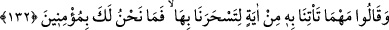
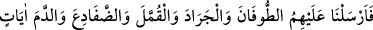
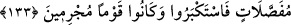

132. Ve dediler ki: “Bizi sihirlemek için ne mucize getirirsen getir, biz sana
inanacak değiliz.”
“Ve” Firavun ve kavmi, asâ mucizesini, kıtlık yıllarını ve ürünlerinin azaltılmasını
gördükten sonra Mûsâ (a.s.)’a “dediler ki: “Bizi büyülemek” gözlerimizi boyamak ve
şaşkına çevirmek “için” bize “ne kadar mucize getirirsen getir,” ne gösterirsen göster,
önümüze ne getirirsen getir “biz sana inanacak” seni tasdik edecek ve peygamber
olduğuna inanacak “değiliz.”
133. Biz de ayrı ayrı mucizeler olarak onların üzerine tufan, çekirge, haşere,
kurbağalar ve kan gönderdik; yine de büyüklük tasladılar ve günahkâr bir kavim
oldular.
“Biz de onların üzerine ayrı ayrı mûcizeler olarak tûfan, çekirge, kımıl (haşerât),
kurbağalar ve kan gönderdik.”
Rivayete göre Mûsâ (a.s.)’ın getirdiği asâ, beyaz el, kıtlık yılları ve ürünlerin
noksanlaşması gibi mucizeler karşısında yenik düşen Firavun ve kavmi yine ona iman
etmediler, bilakis inkarlarında devam ettiler. Bunun üzerine Mûsâ (a.s.) hiddetli bir
halde şöyle beddua etti: “Ya Rabbi, senin kulun olan Firavun yeryüzünde (Mısır’da)
büyüklük taslayıp zorbalığa kalktı, azdı ve haddi aştı. Kavmi de sana verdikleri ahdi
bozdular. Onlara azab gönder; benim kavmim için öğüt ve bizden sonrakiler için de
ibret olacak şekilde onları cezalandır.” Bunun üzerine Allah Teâlâ Firavun ve kavmine
işledikleri günahlara karşılık olarak cezalar gönderdi.
“Tûfan”, onları kuşatacak, evlerini ve ekinlerini kaplayacak bol yağmur ya da sel
suyu demektir.
“el-Cerâd” (Çekirge) demektir. Hayâtü’l-hayevan isimli eserde denilmiştir ki: Kara
çekirgesinin yumurtadan henüz çıkmış haline “ed-debâ’” denilir. Renkler çıkıp
erkekleri sarı, dişileri siyah hâle gelince “el-cerâd” (çekirge) ismi verilir. Bir hadiste
şöyle buyurulmuştur: “Çekirgeleri öldürmeyiniz. Çünkü onlar, Allah Teâlâ’nın en
büyük ordusudur.”[74] Eğer bu hadis sahih ise bu hüküm, çekirgelerin mahsullere zararlı
olmadıkları duruma göredir. Fakat mahsullere zararlı olacak olurlarsa, onları öldürmek
veya başka türlü yöntemlerle uzaklaştırmak caizdir.
Hz. Peygamber (a.s.)’ın önüne bir çekirge geldi. İki kanadı üzerinde İbrânîce olarak
“Biz Allah’ın en büyük ordusuyuz. Bizim doksan dokuz yumurtamız vardır. Şayet